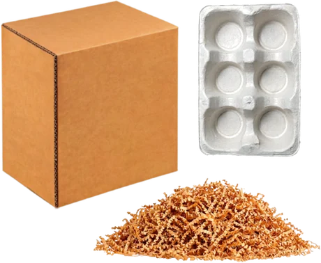

Over a decade of creative design experience.
On the cutting edge of AI and analytics.
Elizabeth Beier · marketing operations, analytics and martech · albuquerque
Selected work
Employer projects are described rather than linked — no client data, no credentials, no proprietary figures.
Work for my employer, demonstrated on a stand-in brand
My employer’s work is confidential, so I built an imaginary packaging company and rebuilt it there. Everything below is real work, shown on invented products.
11 product families · 17 SKUs · 44 documents · every figure invented
See it live at cambiumpak.com
What was asked for → what I built
Each one came in as a request for a single deliverable.

A measurement capability from zero
Tracking architecture and governance, live before a relaunch — because that window closes on launch day. Every tool here is measured by it.
ga4 · tag manager · data api · read →
A website reimagining, without voiding the contract
A CEO's vision, an agency-built site still under warranty, and a deadline. The first move was reading the agreement.
production css v2.20 · vendor management · read →
The product deck generator
42 minutes a product by hand, across a 27-product queue. Now a URL, an extraction you approve, and a deck.
serverless · llm extraction · office open xml · read →
The email campaign generator
75 minutes a campaign, and a UTM convention nobody could follow consistently. The opt-out is now a constant, the audit is code.
utm taxonomy · outlook html · compliance · read →btw — I built the brand too
Mark, palette, five invented certification marks and a rulebook, in two days. I didn't build my employer's brand; this exists so the tools have one to enforce.
For clients and my studio
Illustration, brand and growth work, and the operations behind a working studio.

Choose Democracy
400+ drawings inside an interactive book, four animated explainers, and the art on a nonprofit's website — all held to one style since 2021.
illustration · animation · house style · read →
A studio dashboard for my art business
Five revenue channels on one screen — sales, restock alerts, and the tax envelope. $0 a month. Clickable.
data model · build · automation · read → brand · clientChaney Family Dentistry
A brand refresh for a father-and-son dental practice — a mark drawn half above ground and half below, a seven-colour palette, four drawn portraits and print.
brand · illustration · print · read →For learning and for fun
Two projects you can open and use right now, and two drawn to explain something.

Drive the 505
A learning app for nervous drivers in Albuquerque. Modules, flashcards, quizzes, and an interactive map of the city grid.
javascript · interactive svg · playable · read → research → prototype
Bookspot
An app for readers who want to visit real places from fiction. Eight interviews, ten versions of one flow, 40+ screens, clickable prototype.
research · prototype · usability testing · read → concept · team of four
Passage
An app for someone caring for a person with a terminal illness — tracking the care, and tracking the caregiver. My idea; concept, UI and every illustration mine.
research · ui design · illustration · read → illustration · teaching
Aristotle's Poetics, on one sheet
An infographic for a comics class at California College of the Arts. Drawn in Illustrator and shipped as SVG, so you can zoom into any panel and nothing softens.
illustrator · information design · svg · read → personal project
How a sleep apnea machine works
I took my own APAP machine apart and drew what was inside. Three interactive drawings — tap any numbered part and it lights up.
illustrator · information design · interactive · read →Workflow documentation. The product page launch process written up end to end in five parts — image production, CMS build, asset linking, URL structure, project tracking.
Production and print. Brand-standard creative across digital, social, email and print, including packaging QR systems generated in-file with standardised UTM tagging.
What I work in
If it’s on this list I’ve used it to ship something. The second mark says how.
on my own
AI-accelerated — the range is wider because I know which tool to reach for and how to hold it to a spec
analytics engineering
on my ownGA4 property architecture · Tag Manager governance and migration · custom dimension registration · preview-mode QA and hit-level verification · relaunch baseline preservation · UTM taxonomy and enforcement
AI-acceleratedCustom JavaScript, RegEx table, DOM element and element visibility variables
ai implementation
on my ownLLM integration for extraction and generation · prompt engineering as enforceable specification · internal AI enablement
marketing operations
on my ownEmail and lifecycle marketing · marketing automation · HubSpot (certification in progress) · Buffer · ecommerce operations · campaign SOPs · link tracking · reporting and data visualisation · Meta Ads Manager
front end, web & documents
on my ownWordPress and page builders · Webflow · Squarespace · GitHub · Vercel
AI-acceleratedHTML · production CSS architecture · JavaScript · email HTML with MSO conditionals and VML
design & certifications
on my ownFigma · Illustrator, Photoshop, After Effects, InDesign · brand systems · long-document typography · art direction · copywriting — Google Digital Marketing & Ecommerce 2025 · Google Analytics Individual Qualification 2025 · HubSpot Marketing in progress · UX and UI Design, UC Berkeley Extension 2022
How I got here
I spent the first decade of my career making things — illustration, design, video, teaching graduate students how to tell a story in pictures. I got tired of handing work over and never finding out whether it moved anything, so I learned the measurement side.
I was hired in March 2026 as a production designer. Within four months the job included the website, the analytics build, and shipping internal software, because those things needed doing and there was nobody else to do them. No development background, no developer, no budget beyond a subscription.
None of it happened alone. The tracking ran through IT for access and the agency for implementation. The website work stayed inside a contract boundary agreed with the vendor. Both tools shipped with written procedures.
I'm in Albuquerque, work well remotely, and I'm looking for marketing operations, analytics or martech roles where this is the job rather than the thing I do after hours.
open to marketing operations, analytics and martech roles
Let's talk.
Remote, or Albuquerque and hybrid. Happy to walk through the architecture behind any of this.